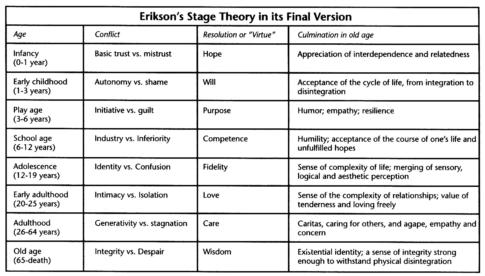

Theories and Stages of Growth
Many different psychologist have formed their own theories about how a child grows and develops, focusing on their physical devlopment and personality growth.
I find myself in the Identity vs. Role Confusion stage, where I know which career I want to go into, but still uncertain about other aspects such as where I'll live and start a family. I've known I want to do something related to STEM since I was young, but recently I have narrowed that interest to Computer Engineering or Computer Science.
Erikson
Erikson is a main researcher in this field, and believes in 8 distinct stages throughout life. The first 5 stages are until age 18 and then there are 3 stages following into adulthood. Erikson anticipates growth in one's life and created his model accordingly.
Trust vs Mistrust
This stage from birth to 18 months is when the child wonders whether the world is a safe place or hostile against it. This is when the infant forms trusting bonds with the mother, who cares for her and gives the infant hope to survive.
Autonomy vs. Shame
From 18 months to age 3, the child begins to walk and explore the world physically. This is a period of time where the child discovers their independence, and begin to try doing things on their own. The child may attempt to wear his clothes on his own, as a form of autonomy, but require help from the parent as they are not entirely trained to.
Initaitve vs. Guilt
Between ages 3 to 5, children become more assertive and aggressive. They begin to plan activities, play games, and lead others in activities. Parents may limit how a child takes initiative, as they may be too forceful. Once this happens, children begin questioning, and if the parent minimalizes the child's question, they may feel like a burden and feel guilty for their curioustiy.
Industry vs. Inferiorty
From ages 5 to 12, children begin to do things on their own entirely. From reading and writing, to going outside and playing, children become invested into their peer group, who gain significance to the child during this time. If the child does not develop a skill they feel society is demanding such as being athletic, they may feel inferior.
Identity vs. Role Confusion
For the majority of adolescence, a teenager searches for a sense of personal identity, exploring their personal values and goals. One begins to look farther than a few years in advance, beginning to think about their role in the world, such as their career and relationships. Finding themself is an important part of knowing what they want to do, and if they are unsure of who they are, they may face a role confusion, where they don't understand what their purpose is in life.
Intimacy vs. Isolation
Between age 18 and once one becomes an adult, many relationships become more intimate and long term. A successful end result would be a family and love, and if unsuccessful, usually ends in isolation for the individual.
Generativity vs. Stagnation
Once a person is stable, with an established career, family, and social life, they turn to giving back to society through raising their children, and becoming involved in activities outside of work, such as community activities and organizations. If a person doesn't broaden their work, they come to a point of stagnation, and feel unproductive.
Ego Integrity vs. Despair
As one become a senior citizen, they slow down and relax more, reflecting on their accomplishments and develop integrity if they feel as though they led a successful life. If the person feels unsure about their life, as unproductive or full of regret, they develop despair, causing depression or hopelessness as they wonder what they spent their life on.
Moral Development
Kohlberg focused on one's moral development and personality, and believed that a person progressed through their moral reasoning in a series of stages.
.